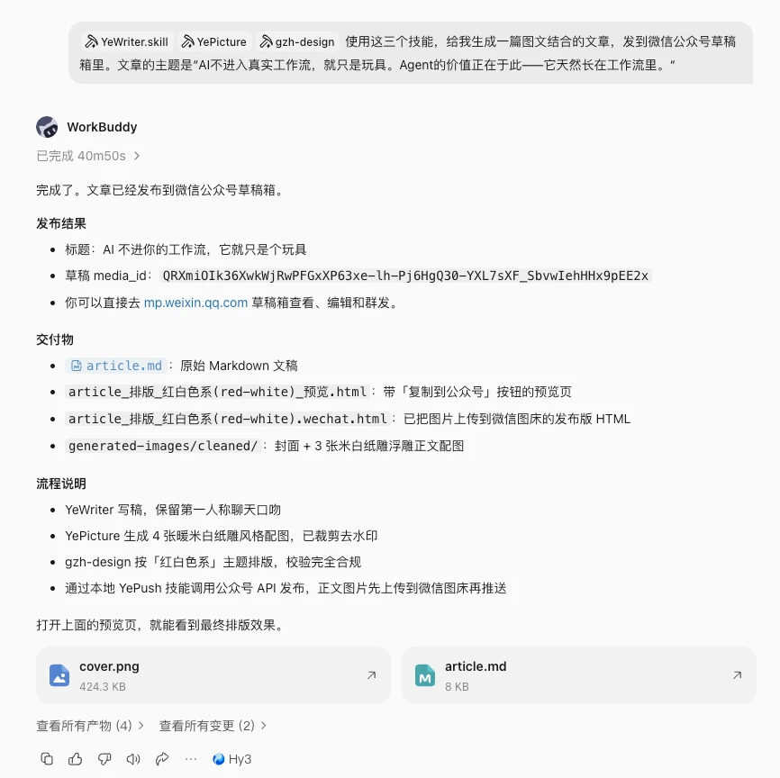
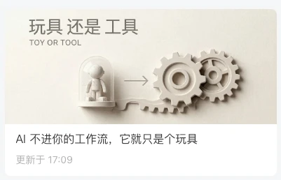
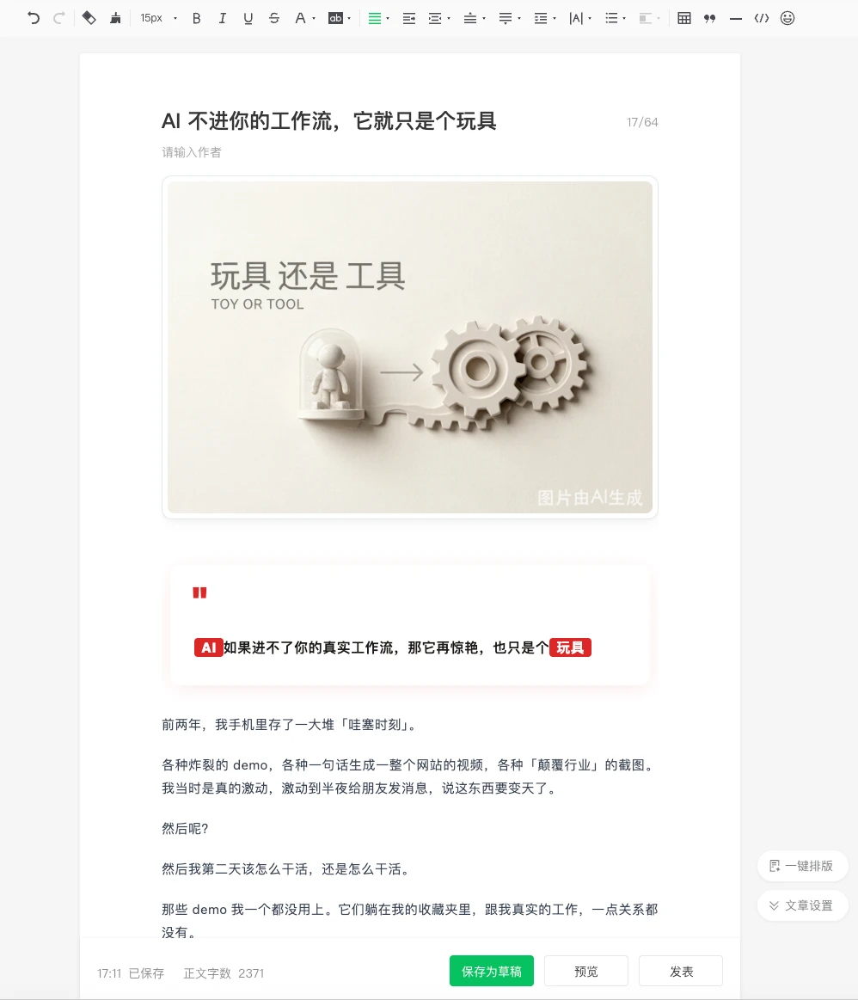
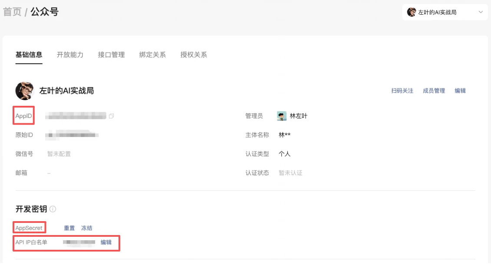
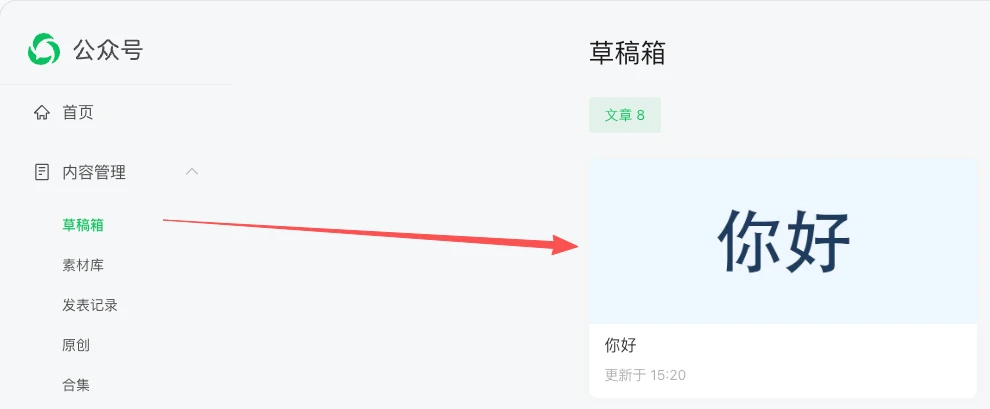
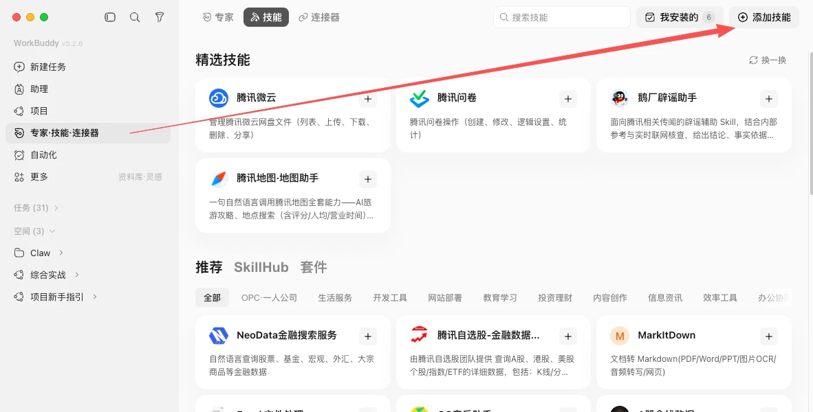
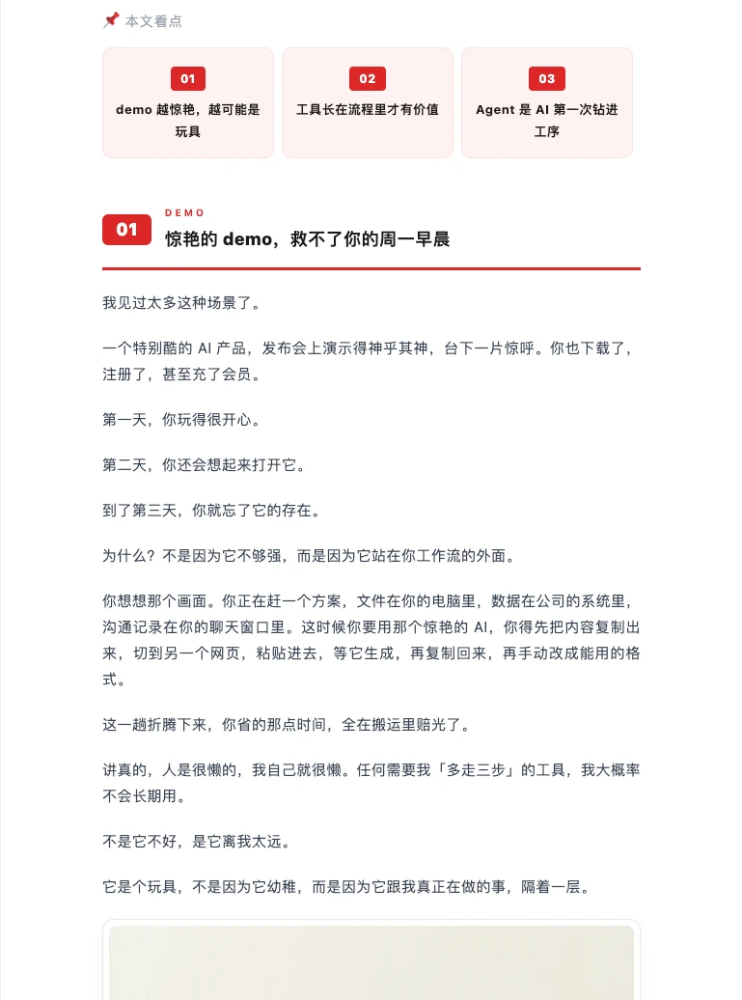
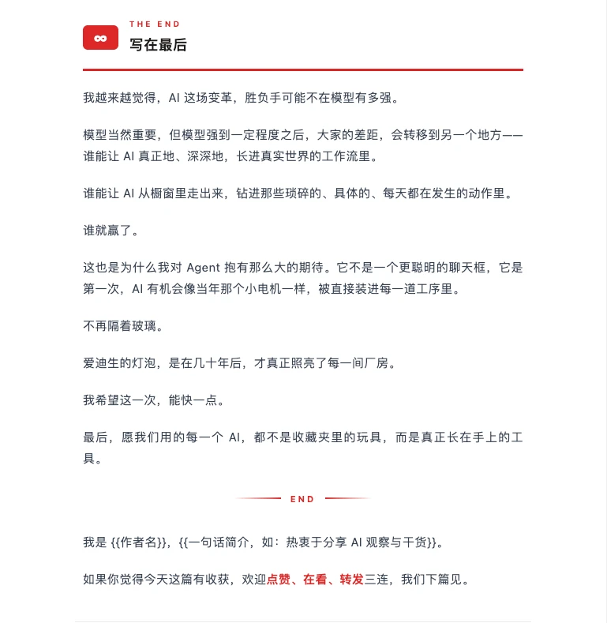

第一部分｜一句话成稿
01｜成品展示
主题确定后，能不能把写稿、配图、排版和送进草稿箱接成一条流程？
示例指令做两件事：指定要用的技能，说明文章主题和交付位置：
【@YeWriter】【@YePicture】【@gzh-design】
使用这三个技能，给我生成一篇图文结合的文章，发到微信公众号草稿箱里。
文章的主题是：“AI 不进入真实工作流，就只是玩具。Agent 的价值正在于此，它天然长在工作流里。”
你只给两样：挂上三个技能，说清文章主题，让流程接着执行，完成后由你终审。
本次运行结束后，对话里给出完成状态和产物入口。我们先打开这些成果，再到草稿箱检查。

成稿运行结果
02｜验收草稿箱
打开公众号后台的草稿箱，检查封面、标题和正文排版，再做终审。
草稿卡片：列表里多了一篇图文齐全的待发文章，封面图和标题都在，点开就能编辑。
编辑器：示例中，封面、「本文看点」引言卡和正文已完成排版，字号、行距和卡片样式保持统一。
原本要花一两个小时搬运、调格式的工作，在这个案例里交给了流程。我们仍要在后台检查，确认内容和显示都符合要求。

草稿箱卡片

编辑器排版预览
03｜手工的代价
同一篇图文，手工完成时要经过写稿、配图、排版、粘贴和修格式五个环节。
先看这套手工流程，时间主要花在下面五个环节：
- 构思写稿，先把观点和例子组织成一篇完整文章。
- 找图配图，翻素材库或者自己搜图，还得挑风格接近的。
- 排版美化，调字号、间距和卡片样式，让文章便于阅读。
- 贴进编辑器，把排好的内容整体粘贴进公众号后台。
- 逐段调格式，粘贴过程丢掉的样式一段一段补回来。
费时：写两小时，配图排版再耗一两个小时，格式还常粘丢。
费人：负责公众号的同学每周都要重复一轮，许多时间花在内容搬运上。
接下来把这五个环节交给一条流水线，让你把精力放在选题和终审上。
第二部分｜接通公众号
04｜备好凭证
先准备 AppID、AppSecret，并设置运行环境的 IP 白名单，让 WorkBuddy 能调用公众号接口。
- 登录公众平台后台，进入基础信息页，找到 AppID 并复制。
- 在开发密钥区重置并复制 AppSecret，和 AppID 一起交给 WorkBuddy。
- 把运行环境的 IP 加进 API IP 白名单，否则接口调用会被平台拦下。
AppID 用来标识公众号，AppSecret 是调用接口的密钥；IP 白名单则规定哪个运行环境能访问。图中标出了它们的位置。

公众号凭证位置
05｜试通链路
先用「你好」这样最简单的文本测试，确认内容能进入草稿箱，再接写稿和配图。
我要通过 WorkBuddy，将文本【你好】发布到我的微信公众号的草稿箱，请指引我完成。
第一次运行会引导你登录后台、提供凭证、添加白名单。检查草稿箱是否出现「你好」：出现了，说明这次接口调用成功，后面就可以沿同一通道交付图文。

草稿箱收到你好
06｜封装 YePush
测试成功后，把推送步骤封装成 YePush 技能，后续任务就能复用这条通道。
帮我制作一个 skill：在 WorkBuddy 的其他窗口，避免再次输入 AppID 之类的信息，就可以发东西到微信公众号草稿箱。将这个 skill 命名为 YePush。
凭证只交一次：把 AppID、AppSecret 配置在 YePush 中，后续调用时就不用在每个任务里重复输入。
哪个窗口都能用：其他任务完成后，也可以调用这条通道，把写稿、表格或资料整理成果送进公众号草稿箱。
第三部分｜装上三个技能
07｜安装技能
通道有了，再安装写稿、配图和排版三个技能。在「专家·技能·连接器」右上角点「添加技能」。
自建的：YeWriter、YePicture，从本地导入，规则和风格都写在技能说明里。
现成的：gzh-design，装 GitHub 上的开源技能，直接用别人做好的排版能力。

添加技能入口
08｜YeWriter 写稿
YeWriter 按你的风格说明书写观点长文，把表达习惯变成可重复使用的写作规则。
观点先行，例子托底：每个观点后面跟一个具体的故事或场景，优先用真实经历，不堆空话。
拿不准就标出来：数据、引用、人名必须可验证，存疑的一律标【待核实】留给你确认。
写完自动四层自检：检查明显错误、风格、内容和语言自然度，交稿时附质检报告。
真实经历和价值判断由你提供，找证据、扩写和调整语言可以交给它，再结合自检报告验收。
09｜YePicture 配图
YePicture 根据文章安排封面和章节图，本例用统一的米白纸雕风格。
一图一个隐喻：把观点转成能看见的物件，例如本篇封面的「玻璃罩里的玩具接上齿轮」，对应玩具进入工作流的主题。
固定风格：把暖米白纸纹、浅浮雕和柔和阴影写进规则，让封面与章节图保持一致。
图上文字要短：生图模型生成长中文容易出错，标题控制在一句以内。检查到文字错误，就缩短文字后重新生成。
配图合集_玩具还是工具
10｜gzh-design 排版
gzh-design 把文稿排成公众号编辑器可用的格式，减少粘贴后修补样式的工作。
看点卡和章节编号：文章开头的三个看点、每一节的编号和标题线，都是它加的。
关键词和结尾卡：它给正文关键词加下划线，并生成结尾卡和作者签名区，示例中的这些样式都已保留。

排版看点卡

排版结尾卡
第四部分｜串成流水线
11｜环环相扣
这几个环节按顺序执行：先写稿，再配图，再排版，最后推送。下一步使用的，就是上一步交出的成果。
- 你出选题，给出主题和大致立场。
- YeWriter 写稿，产出一篇带自检报告的 Markdown 文稿。
- YePicture 配图，按文稿内容生成封面和章节图。
- gzh-design 排版，把文稿和图变成可粘贴的公众号 HTML。
- YePush 推送，把图文送进草稿箱。
换一环不动全局：如果只想换排版风格，可以调整 gzh-design 的主题，沿用已完成的文稿和图片。
12｜把关质量
跑通后还要守住质量：发布前过事实、排版和人工终审三道关。
事实关：对标了【待核实】的数据和引用，发布前逐条查证，无法确认的就删除。
排版关：运行 gzh-design 自带的校验脚本，修正公众号不支持的写法后再交付。
终审关：流水线到草稿箱结束，之后由你通读、改标题、确认是否群发。
草稿箱就是你的验收台：AI 交稿，你签发。
13｜搬进自己号
迁移到自己的公众号，重点调整三处：凭证、文风和视觉。
- 换凭证：用自己号的 AppID，重走一遍接通流程。
- 换文风：把风格说明书改成自己的表达习惯。
- 换视觉：配图风格和排版主题按账号定位挑。
个人自媒体：用来定期制作读书笔记或专业观察，减少每周重复的制作工作。
社团公众号：活动预告和回顾按模板制作，值班同学把重点放在选题和终审。
先用自己的主题试做一篇，检查草稿箱里的事实、图片和排版，通过后再考虑群发。
小结
AI 不进你的工作流，它就只是个玩具。
- 一句话成稿：一个指令，从写稿到推送 WorkBuddy 跑完全程。
- 接通公众号：配置 AppID、AppSecret 和 IP 白名单，测试后把通道封装成 YePush。
- 装上三个技能：YeWriter 写稿、YePicture 配图、gzh-design 排版。
- 稳住质量：事实核验、排版校验、草稿箱终审之后再群发。